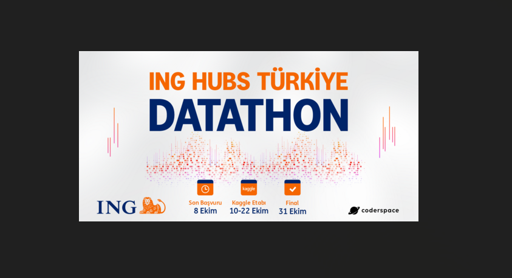

Machine Learning Projects
Click any image to open the full PDF report.
Supervised, Unsupervised, Ensemble, AutoML – end-to-end solutions
From EDA to Deployment

ING HUB DATATHON 2025
During the ING HUB Turkey Datathon we developed a customer churn prediction machine learning solution and ranked within the top 8 among 936 participants and 658 teams.